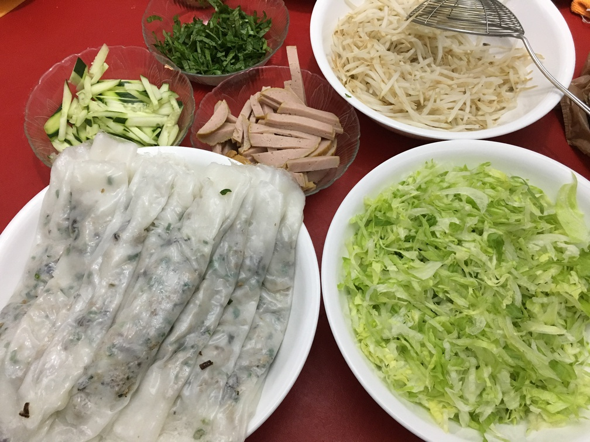
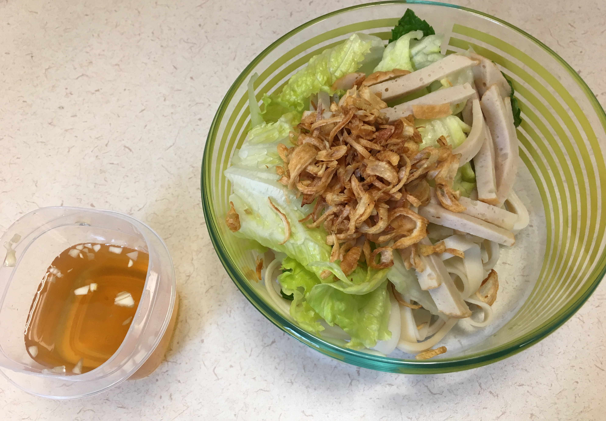

| Other | Meat | Veggie | Fruit |
|---|---|---|---|
| nuoc mam pha | cha | bean sprouts | |
| oil | ground pork | cucumber | |
| rice flour | shrimp | dried fungus mushrooms | |
| salt | green onions | ||
| shandong noodles | hanh kho | ||
| soy sauce | lettuce | ||
| tapioca starch | mint | ||
| wonton soup base | shallot | ||
| thai basil |
| instructions |
|---|
| Soak dried mushrooms in warm water; clean similar to rice |
| Mince mushrooms and green onions |
| Blanche bean sprouts |
| Marinate ground pork (100% lean) with minced shallots, salt, and pepper |
| Stir fry the pork and put through meat processor again to break up chunks |
| Stir fry mushrooms and then mix in ground pork and green onions |
| Make the batter: 1 c rice flour, 0.25 c tapioca starch, pinch of salt, 1.5 c water, 0.5 tsp oil |
| On medium high heat, coat pan with oil and spread one layer of batter onto pan into a thin layer |
| Cover for 1-2 min; flip onto an oiled metal surface when it turns a clear color |
| Spread out a spoonful of pork mixture onto crepe and roll |
| Alternate between making crepe and rolling crepe |
| If mixture is not clear, add oil; if breaking, add water |
| Alternatively fill with shrimp or green onions/fried shallots and use 3 oyster sauce : 1soy sauce : 1 sugar and add wonton soup base and water, adjust to taste |
| Alternatively use shandong noodles |
| Eat cuon/noodles with cha, mint, thai basil, lettuce, cucumber, bean sprouts, hanh kho, and nuoc mam pha |